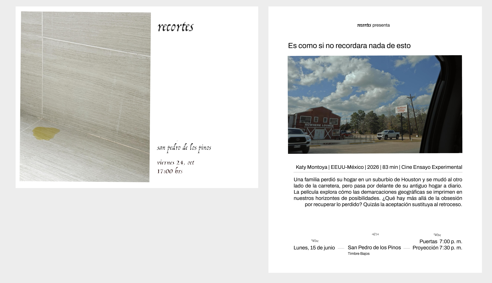


Costa rica, por la libre
Fotolibro
2024


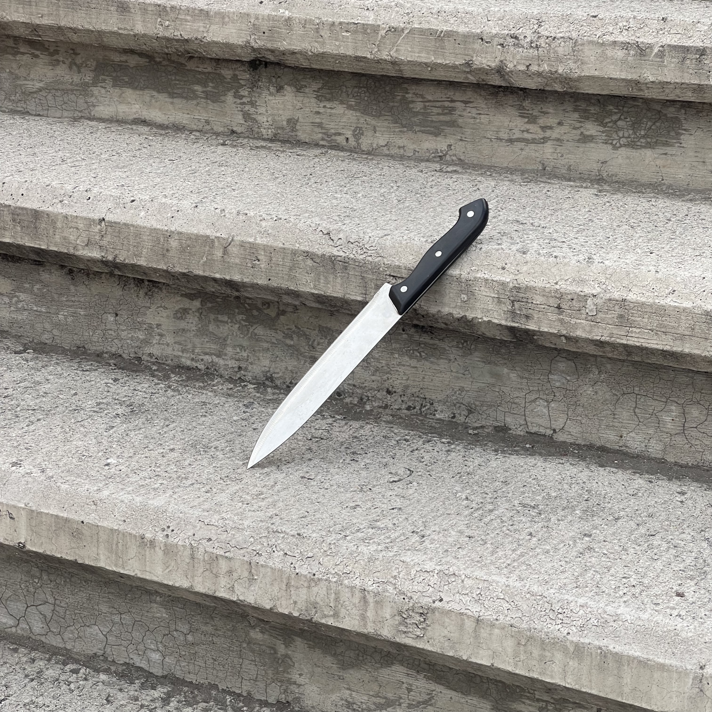

Costa rica, por la libre
Fotolibro
2024

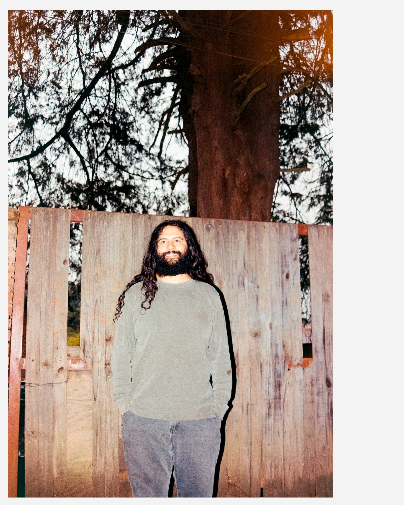


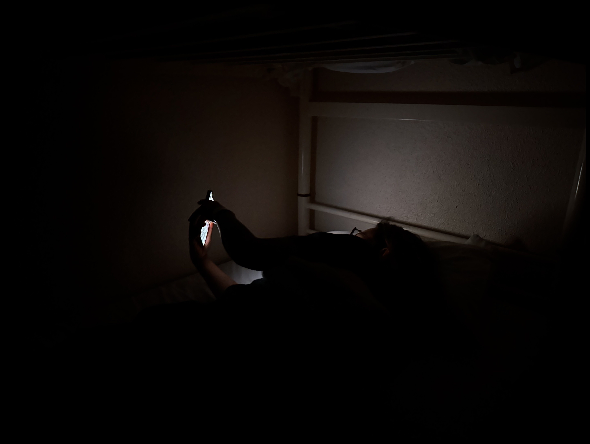
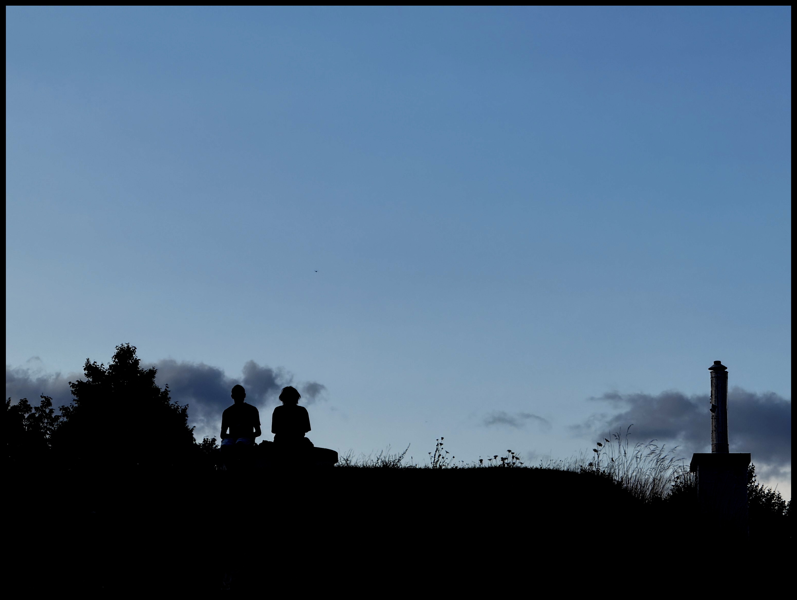


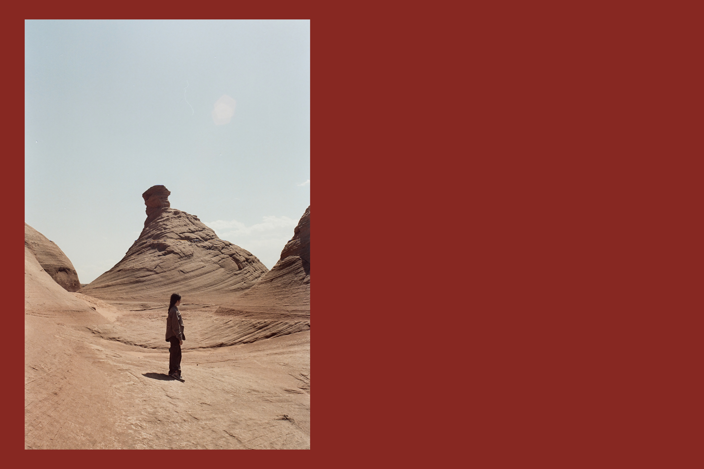


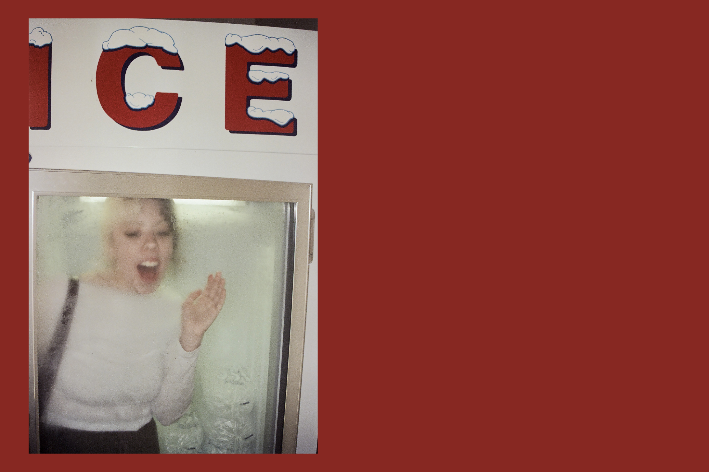


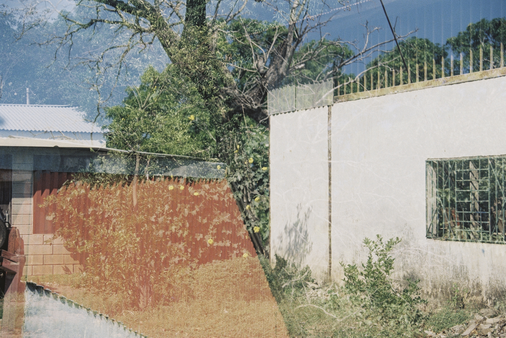
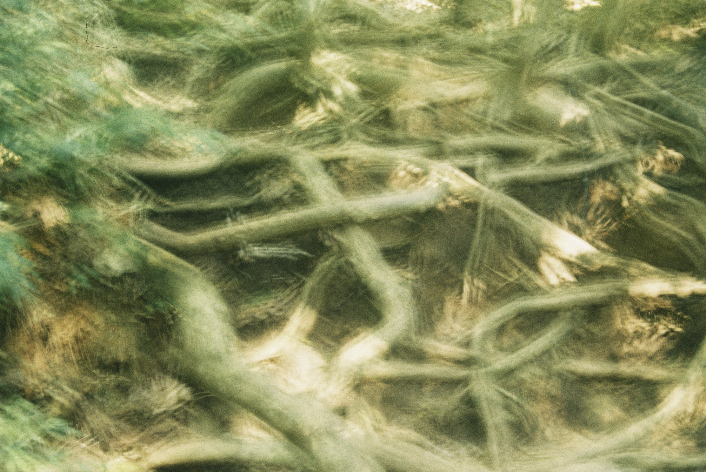
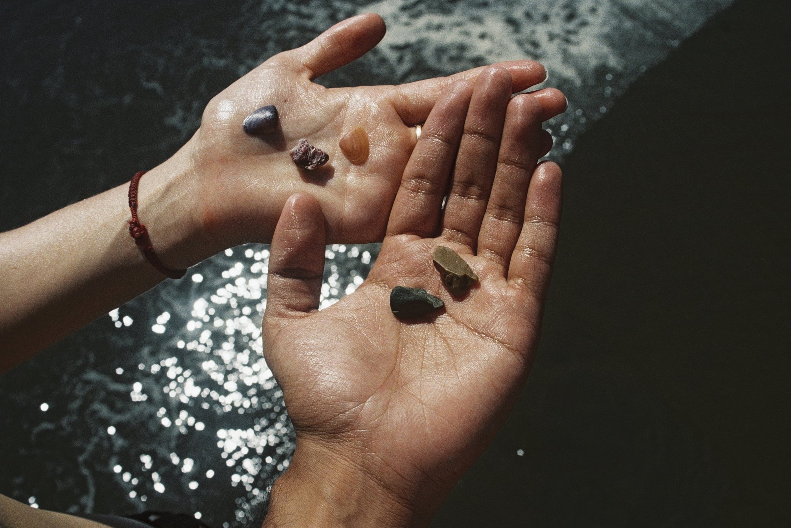
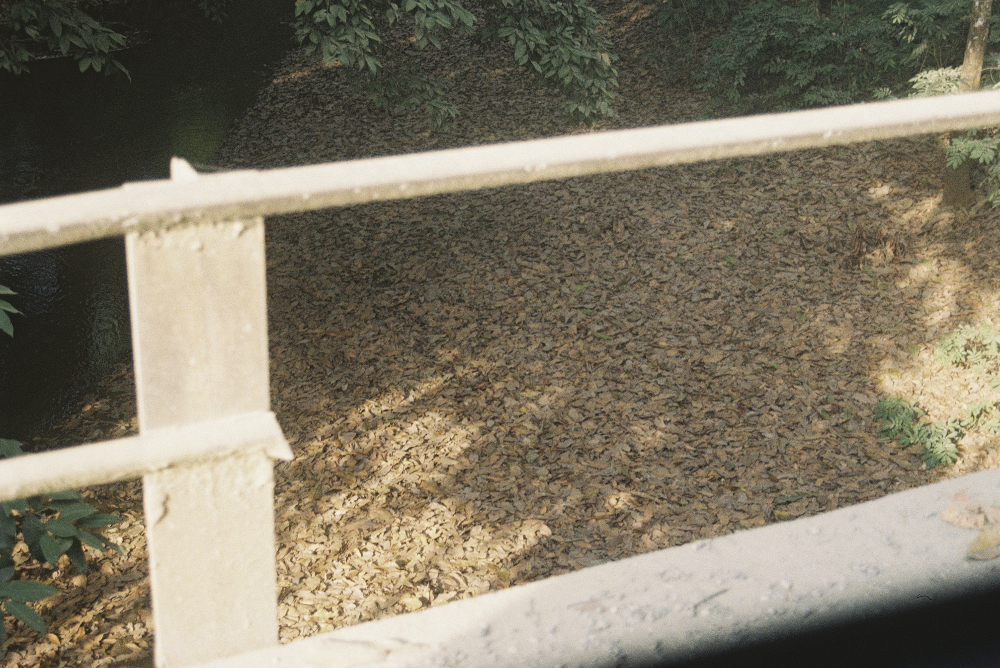


Proyecto de experimentación musical y sonora que explora las posibilidades de la memoria como
material de composición. Cada pieza reúne grabaciones de teléfono —conversaciones y grabaciones de
campo—, improvisaciones musicales y archivos de bibliotecas públicas de sonido. Registros personales
con archivos anónimos, sonidos generados con sonidos encontrados, construyen ambientes audiovisuales
que van entre el documento y la ficción. Las composiciones ensayan la idea del recuerdo como un
proceso de reescritura.
2025 - en desarrollo
Coiffeur
Te está pasando lo mismo que a mí
2024
Dirección — Realización
ciudad de méxico